进程管理
本文最后更新于：February 12, 2023 pm
进程管理
描述与控制
进程的定义:
- 一个正在执行的程序
- 一个正在计算机上执行的程序实例
- 能分配给处理器并由处理器执行的实体
- 由一组执行的指令、一个当前状态和一组相关的系统资源表征的活动单元
进程的基本特征:
- 动态性(本质特性): 正在计算机上执行的程序实例，存在生命周期
- 并发性(重要特性): 任何进程都可以同其他进程一起向前推进
- 独立性: 各进程的地址空间相互独立，除非采用进程间通信手段
- 异步性: 按各自独立的、不可预知的速度向前推进
进程与程序的区别:
- 程序是静态的，而进程是动态的
- 进程包括了程序相关的数据
- 一个应用程序的执行可能有多个进程
进程结构
进程 = 程序代码 + 相关数据 + 进程控制块(PCB, Process Control Block)
进程映像(Process Image) = 程序代码段 + 数据 + PCB + 栈
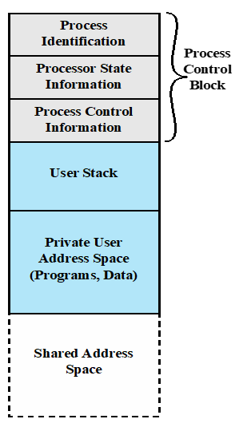
PCB
进程控制块包含了充分的信息， 因此可以中断一个进程的执行，并在后来恢复进程的执行，就好像进程未被中断过那样，PCB是OS支持多进程并提供多重处理技术的关键工具
PCB的内容:
- 进程标识信息
- 处理器状态信息
- 进程控制信息
进程标识信息
操作系统控制的许多表可以使用进程标识符来引用进程表
- 说明内存、I/O设备和文件分配给了哪个进程
- 内存表、I/O和文件表都可以引用进程标识符，进而交叉引用进程表
- 进程通信时，标识通信目标
- 指明每个进程的父进程和子进程
典型进程标识信息:
- 唯一的进程ID
- 父进程(创建该进程的进程)ID
- 用户ID
处理器状态信息
包括通用寄存器内容与标志寄存器内容，可以帮助处理器恢复现场
典型处理器状态信息:
- 用户可见寄存器内容: 部分通用寄存器(IA-32的EAX、EBX、ECX、EDX、ESI、EDI)
- 栈寄存器内容: 每个进程有一个或多个与之相关联的后进先出(LIFO)系统栈，栈用于保存参数和过程调用或系统调用的地址(IA-32的ESP、EBP)
- 标志寄存器内容: 程序计数器(EIP)和条件码寄存器(EFLAGS)
进程控制信息
是操作系统控制和协调各种活动进程所需的额外信息
典型进程控制信息:
- 调度和状态信息:
- 进程状态：如运行态、就绪态、等待态、停止态
- 优先级：描述进程调度优先级的一个或多个域
- 调度相关信息：具体取决于所用的调度算法，如进程等待的时间总量和进程上次运行的执行时间总量
- 事件：进程在继续执行前等待的事件标识
- 数据结构信息: 进程可以以排队、环或其他数据结构链接到其他进程(如链表指向的下一个进程ID)
- 进程间通信: 各种标记、信号和信息可与两个无关进程间的通信关联
- 进程特权: 进程根据其可以访问的内存和可执行的指令类型来赋予特权
- 存储管理: 包括指向描述分配给该进程的虚存的段表和/或页表的指针
- 资源所有权和使用情况: 指示进程控制的资源(IO资源等)
进程状态
两状态模型
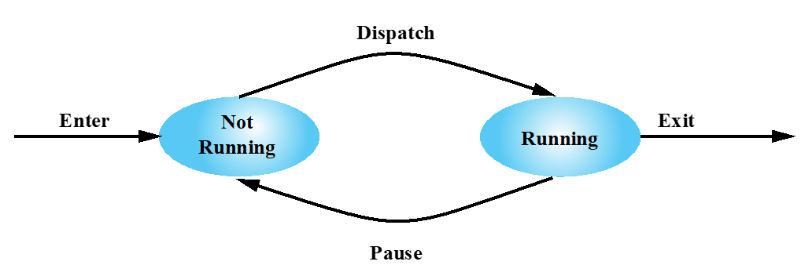
- 创建: 一个新进程添加到正被管理的进程集时，操作系统需要建立用于管理该进程的数据结构(PCB)，并在内存中给它分配地址空间，这些行为构成了一个新进程的创建过程
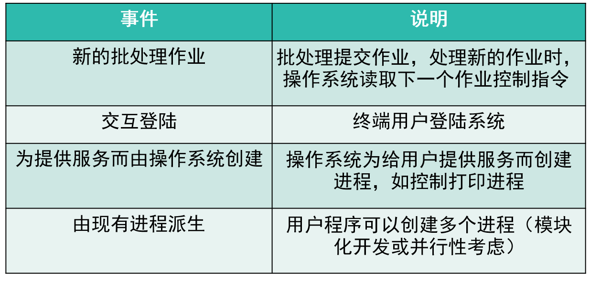 - 终止: 由批处理程序显式调用或用户指出进程何时结束，或进程进行非法操作时由OS进行终止
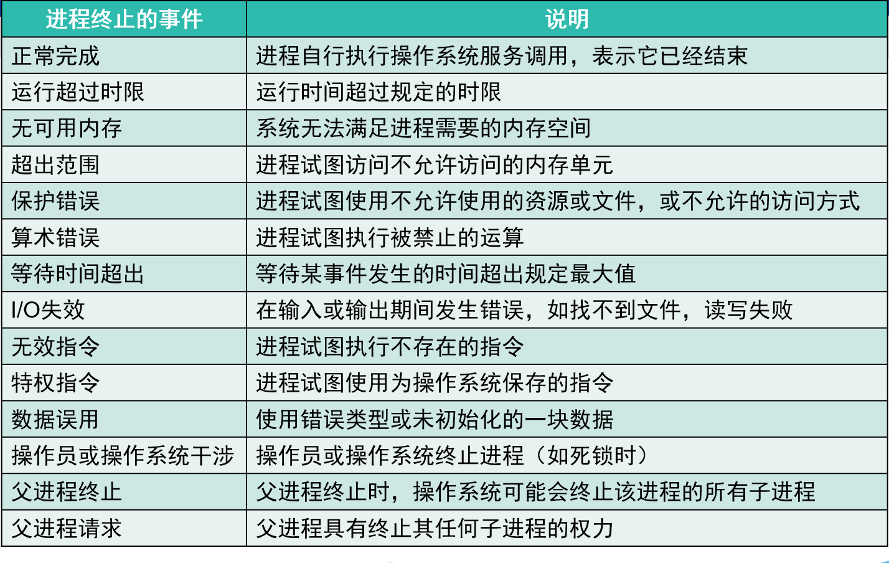
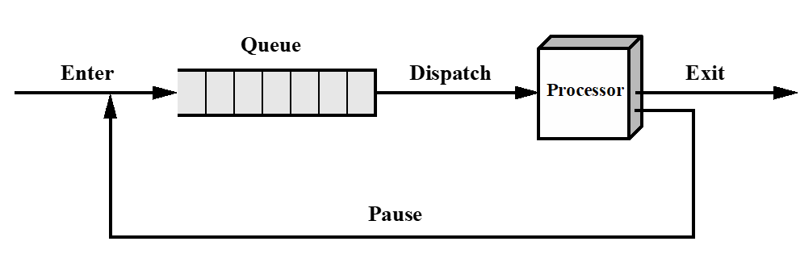
当多进程需要处理时，未运行进程在创建队列进行排队
五状态模型

- 新建(New): 刚刚创建的进程，操作系统还未把它加入可执行进程组，它通常是进程控制块己经创建但还未加载到内存中的新进程
- 就绪(Ready): 进程做好了准备，只要有机会就开始执行
- 阻塞(Blocked): 进程在某些事件发生前不能执行，如I/O操作完成
- 运行(Runing): 处理器正在执行该进程
- 退出(Eixt): 操作系统从可执行进程组中释放出的进程，要么它自身已停止，要么它因某种原因被取消
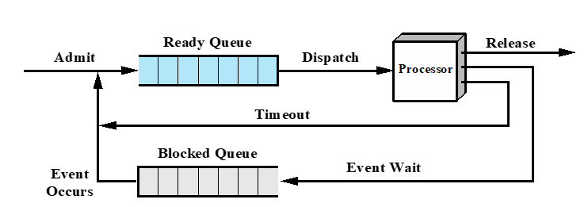
单阻塞队列: 所有阻塞进程位于一个阻塞队列
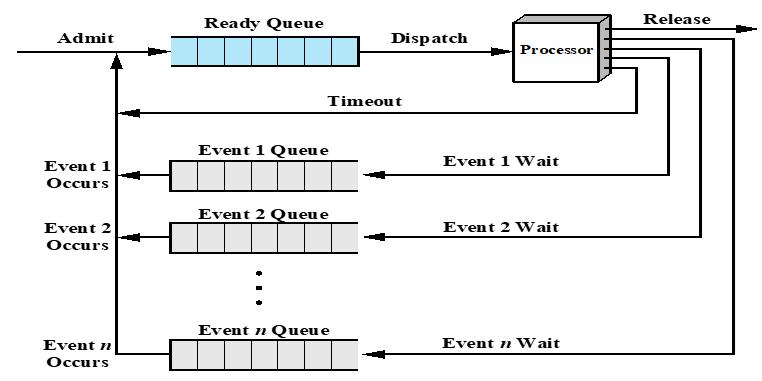
多阻塞队列: 不同事件对应一个阻塞队列
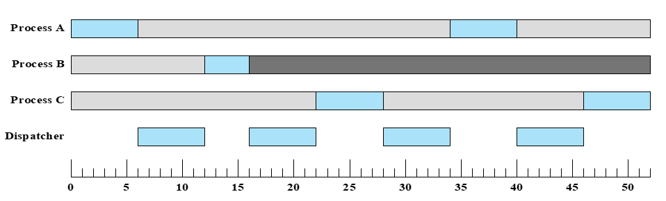
多队列思想同样可以用于就绪队列！从而对就绪进程进行优先级分级
带挂起状态模型
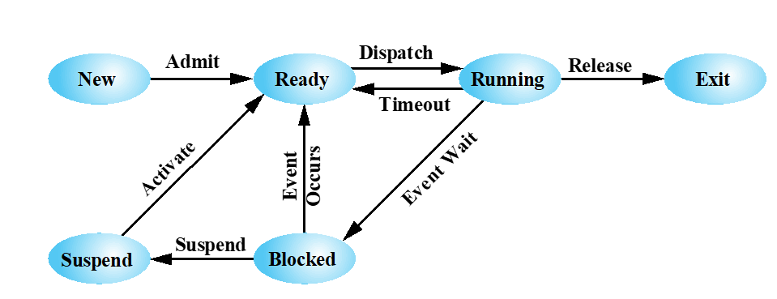
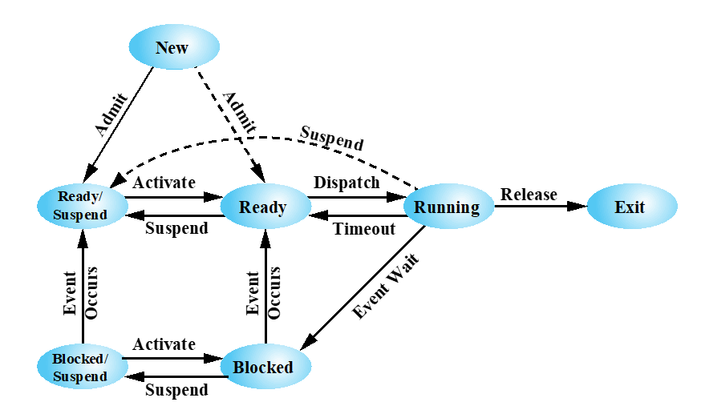
- 就绪/挂起(Ready/Suspended): 进程己在外存中，但只要载入内存就可执行
- 阻塞/挂起(Blocked/Suspended): 进程己在外存中并等待一个事件
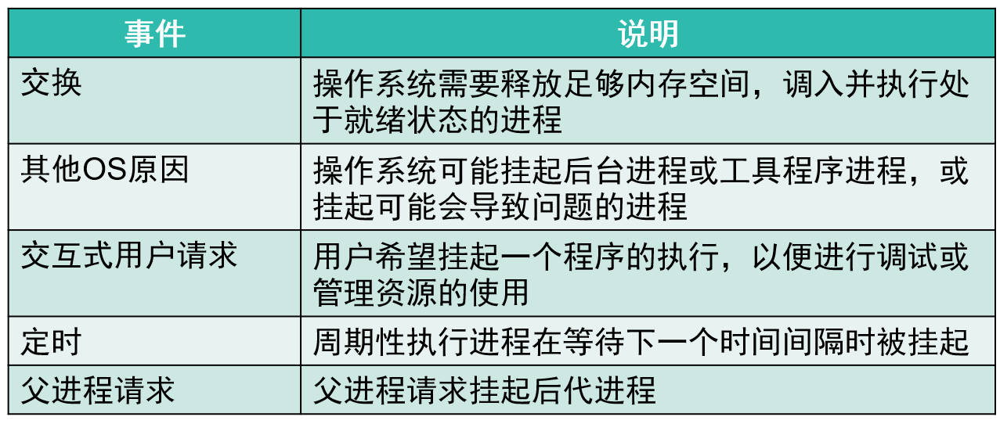
进程控制
操作系统采用表格(或数据结构)来记载各资源的信息，从而实现对资源的管理、维护、更新等，同时进程表必须能被操作系统所访问，因此其受制于内存管理
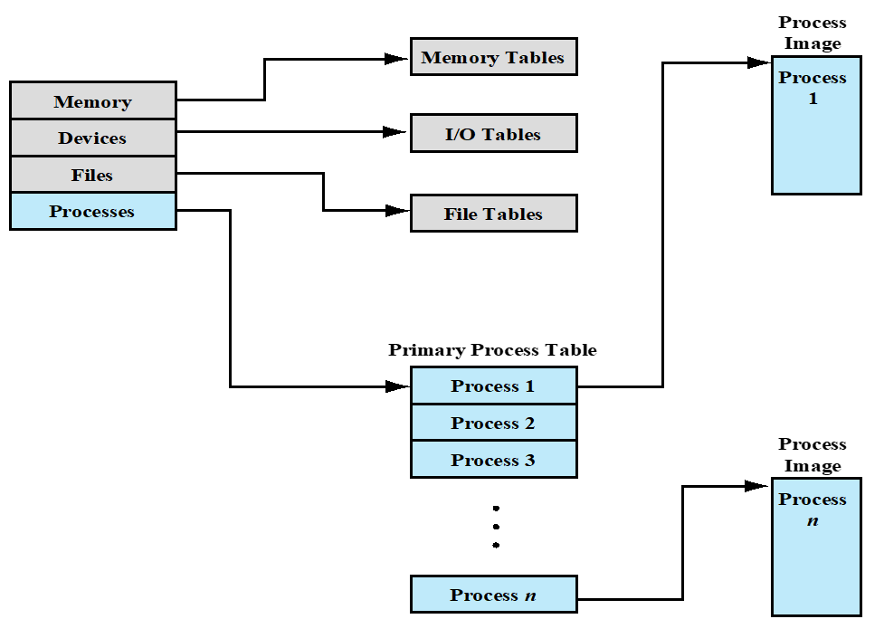
操作系统内核
OS内核是操作系统中包含重要系统功能的部分，并且需要常驻内存，便于提高操作系统运行效能
内核功能:
- 资源管理功能
- 进程管理: 进程的创建、终止、调度、分派、切换、通信等
- 存储管理: 内存管理和内外存交换
- I/O设备管理: 缓冲区管理和I/O通道的分配
- 支撑功能
- 中断处理
- 时钟管理
- 记账功能
处理器模式:
- 用户模式: 具有较少优先权的模式，运行用户程序
- 内核模式: 运行操作系统的内核，执行某些特权指令，访问某些内存空间
使用两种模式可以保护操作系统和重要的操作系统表(如PCB)不受程序干扰
进程创建
当出现了需要创建进程的情况时，操作系统将按以下步骤创建一个新进程
进程切换
进程切换指的是操作系统中断一个正在运行的进程，将另一个进程置于运行模式，并把控制权交给后者
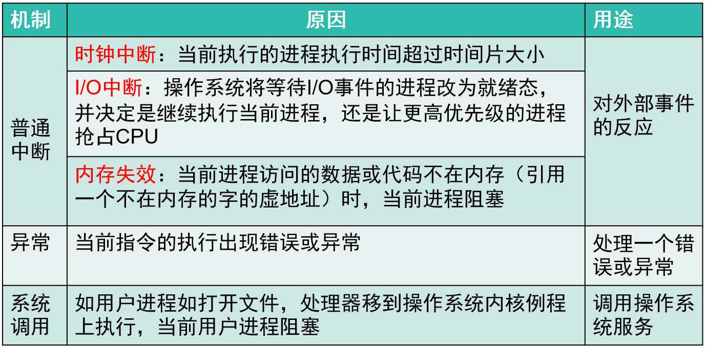
异常和中断的区别详见计组
但是！中断不一定会引起进程切换，例如I/O中断由CPU执行中断处理程序后仍然有可能切换为原进程
然而进程切换一定会引起模式切换，因为进程切换需要切换到内核模式下完成进程调度
进程切换的步骤:
- 保存处理器上下文环境，包括程序计数器和其它寄存器
- 更新当前处于运行状态进程的进程控制块
- 将进程的进程控制块移至相应队列(就绪、阻塞、就绪/挂起等)
- 选择另一进程执行
- 更新其进程控制块信息
- 更新内存管理数据结构
- 恢复被选择进程的上下文环境，如载入程序计数器和其他寄存器先前的值
模式切换
模式切换指用户模式和内核模式之间的相互转换
由用户模式切到内核模式的原因:
- 系统调用: 是操作系统提供给用户程序访问系统内核功能的接口，用户程序通过调用系统调用来获取操作系统提供的服务，服务完成后返回应用程序
- 中断: 以便中断处理能执行特权指令
然而模式切换不一定会引起进程切换，某些系统调用(如getpid)就不会导致进程切换
Unix SVR4的进程管理
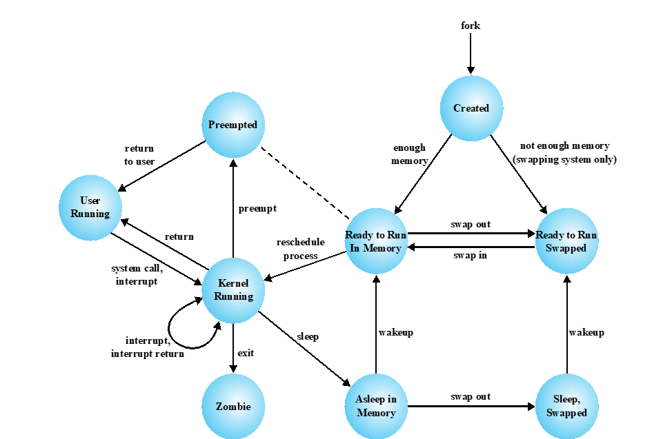
进程创建由内核系统调用fork()实现
fork()调用后的步骤:
- 在进程表中为新进程分配一个空项
- 为子进程分配一个唯一的进程标识符
- 复制父进程的进程映象，但共享内存除外
- 增加父进程所拥有的文件的计数器，反映另一个进程现在也拥有这些文件的事实
- 将子进程设置为就绪态
- 将子进程的ID号返回给父进程，将0值返回给子进程
fork()创建子进程之后，父进程和子进程均在下一条语句上继续运行
fork()创建子进程之后，执行返回父进程，或调度切换到子进程或其他进程(与OS的调度算法有关)
1 | |
输出:
1 | |
1 | |
输出: 共个hello, world(8个进程，每个进程打印一个)
1 | |
1 | |
输出: 因为子进程是复制了父进程的进程映像(除共享空间外)，因此不会影响父进程的数据，子进程数据为自己独有
1 | |
线程
进程的2个基本属性:
- 进程是拥有资源的独立单位
- 进程是调度/执行的基本单位，挂起进程会导致内部所有线程被挂起，终止进程会导致内部所有线程被终止，因此线程只是独立调度和分配的基本单位
线程是进程中的一个实体，是独立调度和分配的基本单位
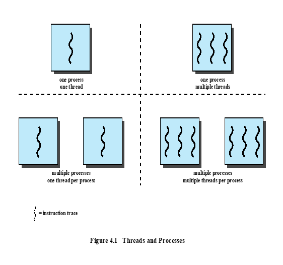
- 单进程单线程: MS Dos等
- 单进程多线程: JVM(Java虚拟机)等
- 多进程单线程: 传统Unix等
- 多进程多线程: 现在操作系统(Windows、Solaris)等
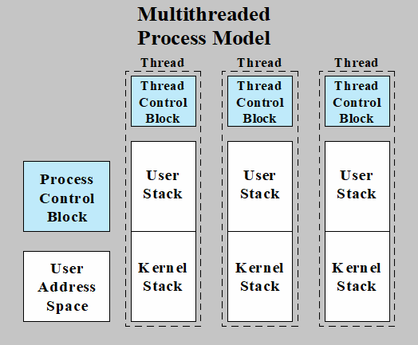
进程内可能有多个线程，每个线程都有包含线程信息的TCB(Thread Control Block)、线程代码、局部变量的静态存储空间、执行栈和与进程内其他线程共享的内存和资源访问
线程的优点:
- 创建时间短
- 终止时间短
- 切换时间短
- 执行程序间的通信效率高(进程通信难度大于线程通信)
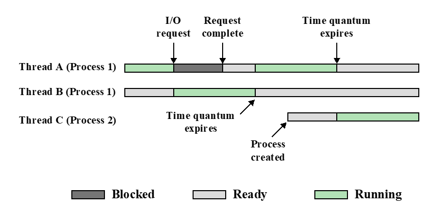
线程分类
可以分为:
- 用户级线程(ULT)
- 内核级线程(KLT)
- 混合方法
ULT
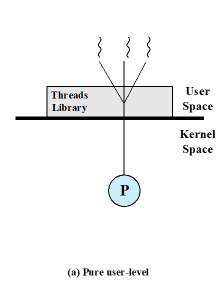
线程由用户自己管理(创建、终止、调度、挂起)，OS不知道有线程存在
KLT
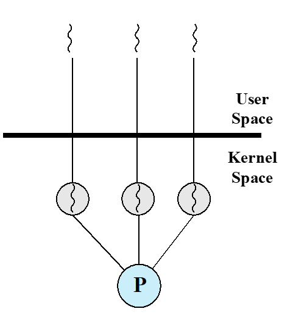
线程管理由OS进行，应用程序无法参与线程管理
不同类型线程优缺点
| 线程类型 | 用户级 | 内核级 | 混合方法 |
|---|---|---|---|
| 优点 | 线程切换不需要内核模式特权 调度策略因应用程序不同而不同 可以运行在任何操作系统上 |
内核可以把同一个进程内的多个线程调度到多处理器上，提高并发性 当一个线程阻塞时，内核可以调度同一进程内的其他线程 内核例程本身也可以是多线程的，提高了内核的运行效率 |
线程创建在用户空间完成(开销小，不需要模式切换) 线程调度和同步也由应用程序完成(开销小，不需要模式切换) 一个应用程序中的多个线程被映射到一些(小于或等于用户级线程数) |
| 缺点 | 当用户级线程执行系统调用时，不仅阻塞当前线程，还将引起同一进程中的其他线程阻塞 不能利用多处理器技术 |
把控制权从一个线程传递到相同进程内的另一个线程时，需要切换到内核模式(由OS进行线程切换) |
调度
调度类型
调度的目的是以满足系统目标(如响应时间、吞吐率、处理器效率)的方式，把进程分配到一个或多个处理器上执行
在本节中仅考虑单处理器，多处理器的调度复杂度远高于单处理器调度
首先可以将调度进行分类:
- 长程调度: 长程调度程序决定哪个程序可以进入系统中处理(创建进程)，因此它控制了系统的并发度，常见的调度算法: 先来先服务FCFS或根据优先级、期望执行时间等进行调度
- 中程调度: 中程调度是交换功能的一部分(主要是进程在内存与外存的管理)，调度算法与存储管理相关
- 短程调度: 由就绪状态中挑选进程进入执行状态，调度算法将在下面详细介绍
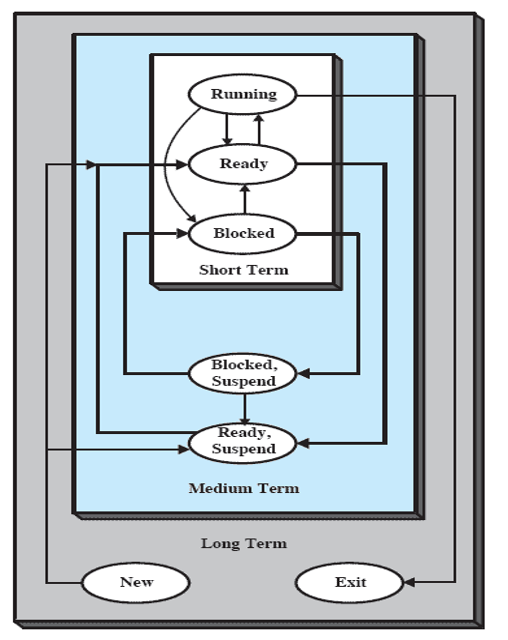
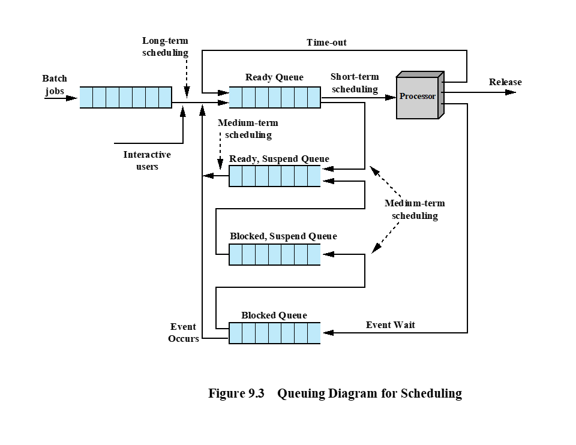
本节也主要关注短程调度
调度标准
- 响应时间: 从用户提交一个请求开始，到接收到第一个响应之间的时间间隔，响应时间 = 输入传送时间 + 计算时间 + 响应传送时间
- 周转时间: 从作业提交开始，到作业完成之间的时间间隔
- 截止时间: 某任务必须开始执行的最迟时间，或必须完成的最迟时间
- 吞吐量: 单位时间内完成的进程数量
- 处理器利用率: 处理器处于忙状态的时间百分比
响应时间与周转时间无法比较长短，如果进程只进行一次响应后即结束，则响应时间等于周转时间；如果进程需要响应多次，则响应时间小于周转时间
- 平均周转时间:
- 带权周转时间: ，其中T为周转时间，为系统为进程服务时间
- 平均带权周转时间:
调度决策
调度规则
短程调度的主要目标: 按照优化系统某些方面的方式，来分配处理器时间
调度规则的影响因素: 面向用户/面向系统与性能相关/性能无关
- 面向用户且性能相关: 周转时间、响应时间、截止时间
- 面向用户且性能无关: 可预测性
- 面向系统且性能相关: 吞吐量、处理器利用率
- 面向系统且性能无关: 公平性、强制优先级、平衡资源
优先级: 通过多条就绪队列进行实现
调度模式
- 非抢占式: 执行进程只有在执行完毕，或因申请I/O或请求某些操作系统服务而阻塞自己时，才释放处理器
- 抢占式: 执行进程可能被操作系统中断，并转换为就绪态，抢占发生原因:
- 新进程到达
- 中断发生后把一个阻塞进程置为就绪态
- 周期性的时钟中断(防止独占)
调度函数
关键参数:
- w: 目前为止在系统里的等待时间
- e: 目前为止花费的执行时间
- s: 进程所需的总服务时间(用户提供或估计)
调度算法
- 先来先服务(First Come First Served, FCFS)
- 时间片轮转(Round Robin, RR)
- 短作业优先(Shortest Job First, SJF)
- 剩余时间最短优先(Shortest Remaining Time, SRT)
- 响应比高优先(Highest Response Ratio Next, HRRN)
- 反馈(Feedback, FB)
FCFS
说明: 按照到达的先后顺序来调度，属于非抢占调度方式
评价:
- 有利于CPU繁忙型的进程，而不利于I/O繁忙型的进程(CPU繁忙型会持续占有CPU，而I/O繁忙型进程进行I/O后需要重新排队)
- 平均周转时间长，不适合直接用于单处理器系统,通常与其它调度算法混合使用
RR
说明: 每个进程被分配一个时间片，周期性产生时钟中断，中断时当前进程进入就绪队列末尾，基于FCFS选择下一个作业运行，如果进程在时间片内阻塞或结束，则立即切换进程
评价:
- 属于抢占调度方式
- 时间片的设置与系统性能、响应时间密切相关
- 当时间片趋于无穷大时: RR变为FCFS，对CPU繁忙型有利，同样会引起对短的交互请求的响应时间变长
- 当时间片为1时，对I/O繁忙型较为有利(但IO阻塞后仍需排队)，但频繁切换进程降低了CPU的效率
- 因此时间片最好略大于一次典型交互的时间，仍对CPU繁忙型有利
RR算法在通用的分时系统或事务处理系统中特别有效
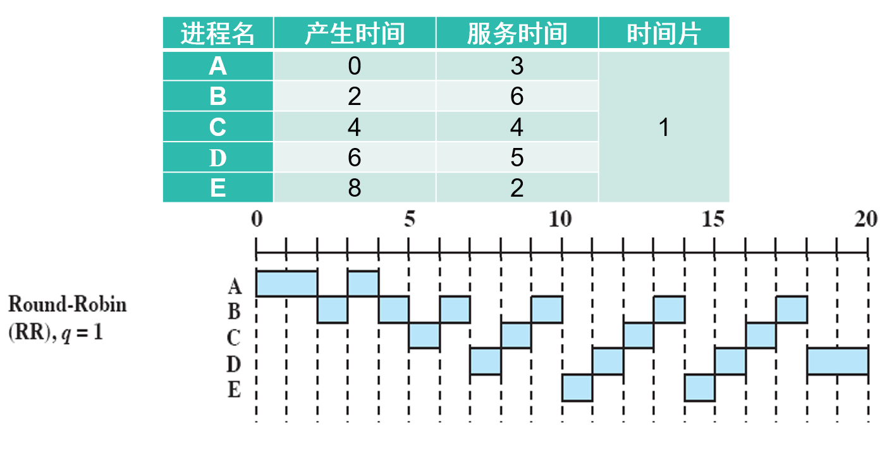
平均周转时间 = ，平均带权周转时间 =
VRR: 是对RR的改进，增加一个辅助队列，接收I/O阻塞完成的进程，调度优先于就绪队列，但占用的处理机时间小于就绪队列的时间片
SJF
说明: 根据用户提供的或估算的作业执行时间进行调度，选择执行时间最短的作业交给CPU
评价:
- 属于非抢占调度方式，短进程跳到队列头，可能导致长进程饥饿，因此不适用于分时系统或事务处理环境
- 有利于短进程，减小了平均周转时间(非抢占调度下，长进程一般会导致短进程的高周转时间，所以有利于短进程能减小平均周转时间)
- 进程的长短根据用户所提供的估计执行时间而定，用户估计不准时，导致该算法不一定能真正做到短作业优先调度
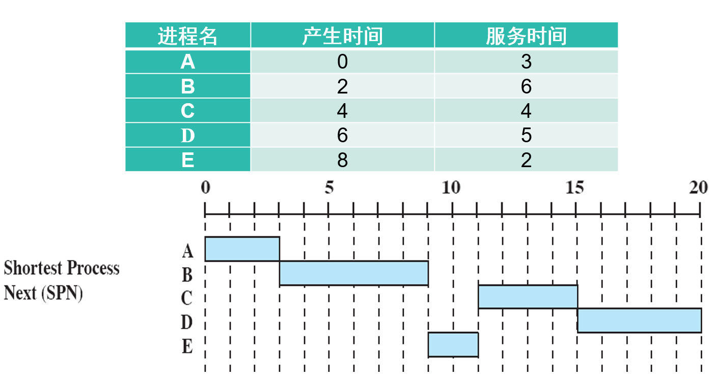
平均周转时间 = ，平均带权周转时间 =
SRT
说明: 调度程序总是选择预期剩余时间最短的进程，当一个新进程加入就绪队列时，如果它比当前运行的进程具有更短的剩余时间，就可能抢占当前正在运行的进程
评价:
- 属于抢占式调度方式，既不像FCFS那样偏爱长进程(非抢占式)，也不像RR算法那样会产生很多额外的中断(因时间片而产生)，从而减少了开销
- 周转时间短，SRT比SJF性能要好，只要就绪，短作业可以立即被选择执行
- 需要估计预期的服务时间(估计可能不准)
- 存在长进程饥饿现象
- 必须记录进程的已服务时间
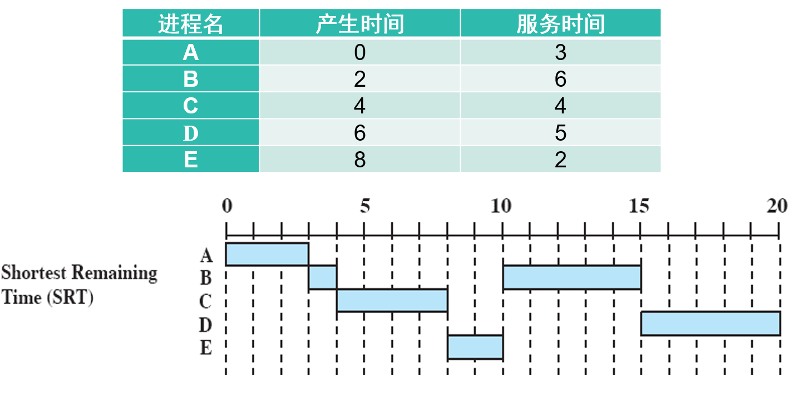
平均周转时间 = ，平均带权周转时间 =
HRRN
说明: 选择就绪队列中响应比最高的进程投入执行
响应比: ，为进程等待时间为估计的作业执行时间
评价:
- 属于非抢占式调度方法，实质上是一种动态优先权调度算法
- 是FCFS和SJF的结合，既照顾了短进程，又考虑了作业到达的先后次序，不会使长进程长期得不到服务
- 需要计算响应比，增加系统开销，且难以准确计算(需要估计执行时间)
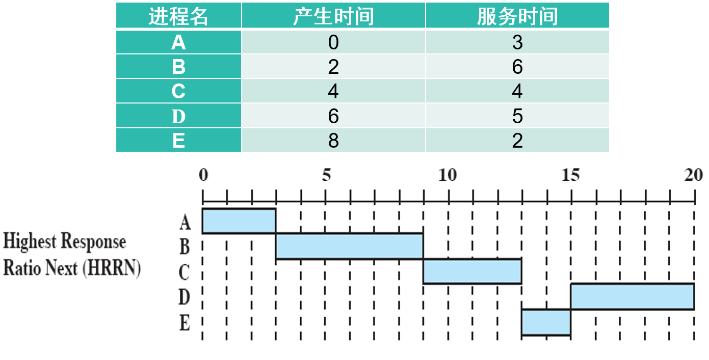
平均周转时间 = ，平均带权周转时间 =
FB
SJF、SRT和HARRN都采用了进程估计执行时间这一参数作为调度的因素来奖励短进程从而降低平均周转时间，然而该参数很难进行准确估算
而FB采用的是惩罚长进程的思想，其关注进程的已执行时间参数，该参数可以被精准测量，根据进程执行历史，调度基于按时间片的抢占原则
说明:
- 设置多个就绪队列，每个队列赋予不同优先级(第一队列优先级最高，依次递减，各个队列中进程执行的时间片不相同，优先级越高的队列，时间片越小)
- 新进程进入时，首先放入第一个队列尾(优先级默认最高)，按FCFS原则排队
- 如果进程在当前队列规定的时间片内完成则退出，未完成则抢占，一般而言，从队列i中调度的进程允许执行的时间，然后才被抢占，降级到下一个优先级队列(如果没有其他进程需调度，则当前进程不降级)
- 到达最低优先级队列后，不再降级
- 仅当第一队列空闲时，才调度第二队列中的进程，依次类推
评价:
- 属于抢占式调度方式，能较好地满足各种类型用户的需要
- 有利于终端型作业用户: 常为短作业，能在第一队列所规定的时间片内完
- 对短作业用户有利: 能在前几个队列所规定的时间片内完成
- 长进程: 将依次在第1, 2, ···, n个队列中运行，随着优先级下降，分配的时间片长度增加，减少了抢占次数，不会发生长进程饥饿
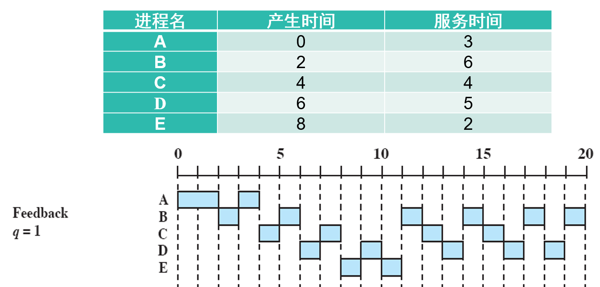
平均周转时间 = ，平均带权周转时间 =
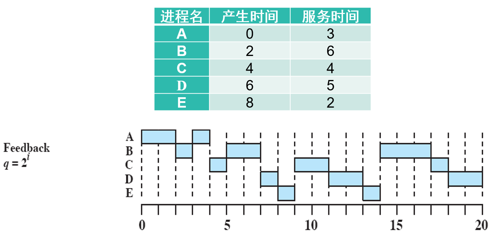
平均周转时间 = ，平均带权周转时间 =
实时系统与实时调度
实时系统
实时系统要求系统能够及时(即时)响应外部事件的请求，在规定的时间内完成对该事件的处理，并控制所有实时任务协调一致地运行
实时任务: 具有及时性要求的、常常被重复执行的特定进程，在实时系统中习惯称为任务
调度标准中有一个标准为截止时间，在实时系统中截止时间分为2类:
- 开始截止时间: 任务在某时间以前，必须开始执行
- 完成截止时间: 任务在某时间以前必须完成
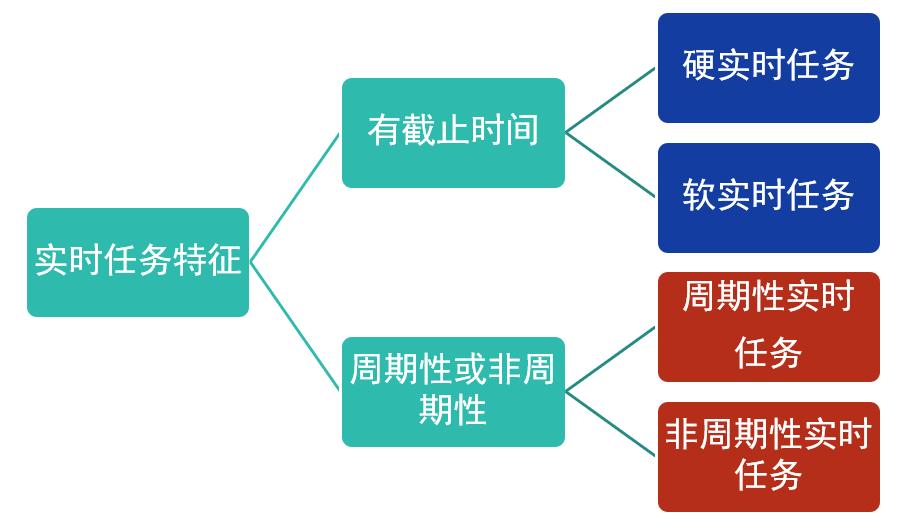
实时任务的信息:
- 就绪时间
- 开始截止时间
- 完成截止时间
- 处理时间
- 资源需求
- 优先级
- 子任务结构: 一个任务可分解为一个必须执行的子任务和一个可选执行子任务，前者有硬截止时间
实时操作系统特点:
- 可确定性: 任务按照固定的、预先确定的时间或时间间隔进行
- 可响应性: 关注系统在知道中断后为中断提供服务的时间
- 用户控制: 用户能够区分软、硬实时任务，并控制任务优先级
- 可靠性: 实时响应和控制事件，保障性能
- 失效弱化: 系统具有稳定性，当不能满足所有任务的实时性时，首先满足优先级高的任务
实时调度
实时调度从2个角度进行分类:
- 调度方法
- 抢占方式
调度方法
- 静态表驱动调度法
- 静态优先级抢占调度法
- 基于动态规划的调度法
- 动态尽力调度法
静态表驱动调度法
制订静态调度表(即固定时间执行固定进程)，用于调度周期性实时任务
任何任务的调度申请改动都会引起调度表的修改
EDF(Early Deadline First)调度算法即是属于静态表驱动调度法
说明: 根据任务的截止时间来确定任务的优先级
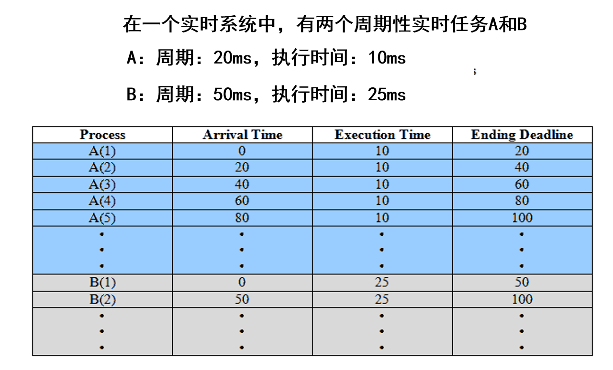
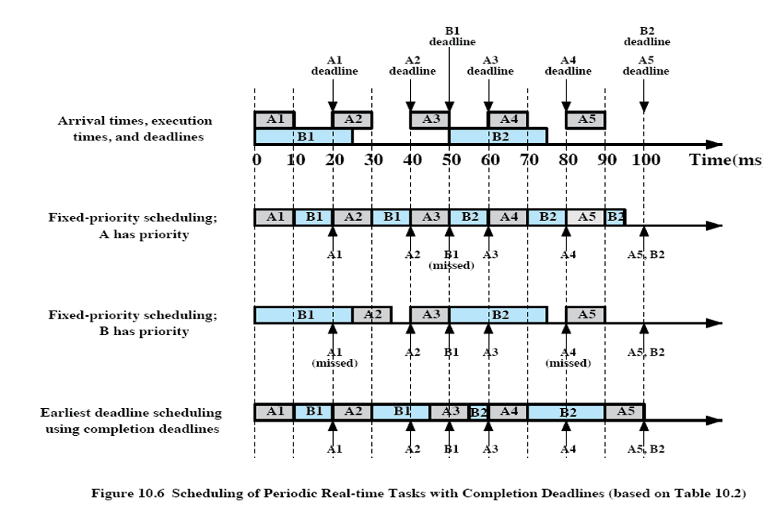
静态优先级抢占调度法
根据任务的时间约束确定优先级从而根据优先级进行抢占调度，多用于非实时多道程序系统
速度单调算法(RM,Rate Monotonic)即是根据任务周期长度为实时任务赋予静态优先级
说明: 任务周期越短，优先级越高，优先级函数是任务速度(任务周期的倒数)的单调递增的函数
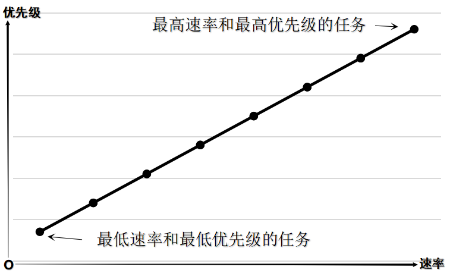
基于动态规划的调度法
当实时任务到达以后，系统为新到达的任务和正在执行的任务动态创建一张调度表
说明: 在当前执行进程不会错过其截止时间的条件下，如果也能使新到达任务在截止时间内完成，则立即调度执行新任务
动态尽力调度法
当任务到达时，系统根据其属性赋予优先级，优先级高的先调度
当任务是非周期时，其缺点在于当任务完成，或截止时间到达时，很难知道该任务是否满足其约束时间
允许CPU空闲的EDF
说明: 优先调度截止时间最早的还未就绪但是已知道其开始截止时间任务，并让该任务运行完毕
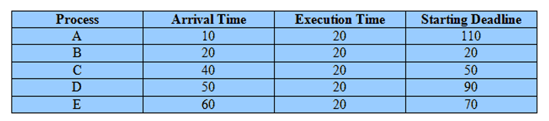
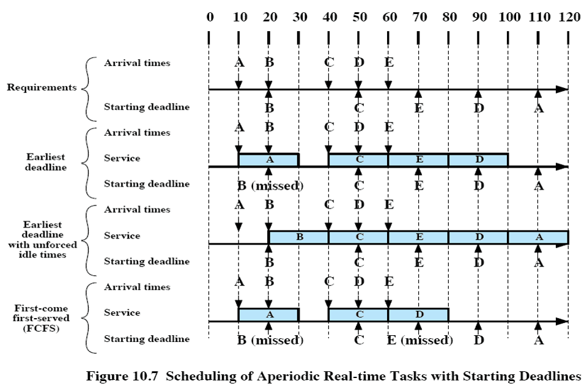
抢占方式
- 基于时间片的轮转抢占式调度
- 基于优先级的非抢占式调度
- 基于优先级的抢占点抢占调度
- 立即抢占式调度
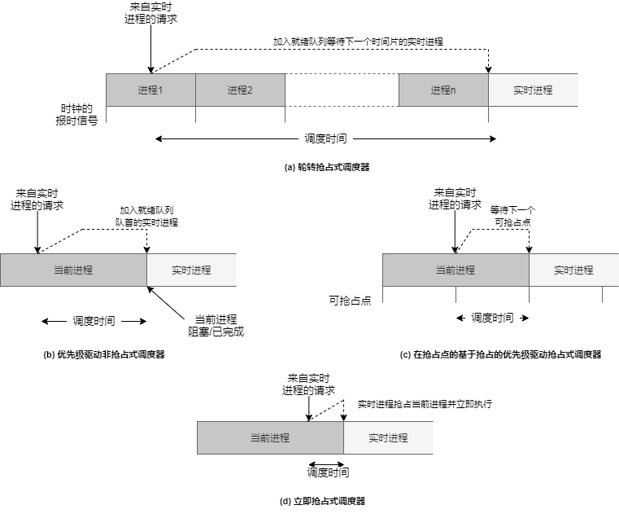
同步
进程间有以下三种关系:
- 竞争
- 通过共享合作
- 通过通信合作
竞争: 进程间不知道彼此的存在，竞争使用同一资源时会发生冲突，竞争面对的并发控制问题为互斥、死锁、饥饿
通过共享合作: 多个进程可能共享一个变量、共享文件或数据库，共享面对的并发控制问题为互斥、死锁、饥饿、数据一致性
通过通信合作: 进程间通过通信完成同步和协调彼此活动，通信面对的并发控制问题为互斥、死锁
| 术语 | 解释 |
|---|---|
| 原子操作 | 由一个或多个指令序列实现的动作或函数，对外不可见，一组指令要么都执行，要么都不执行 |
| 临界资源 | 不可同时访问，必须互斥访问的资源，如打印机 |
| 临界区 | 访问临界资源的代码，任意时刻只能由一个进程在这段代码中运行 |
| 互斥 | 当一个进程在临界区访问共享资源时，其他进程不能进入该临界区访问共享资源的情形 |
| 活锁 | 两个或两个以上的进程为响应其他进程而持续改变自己状态，但是不做有用工作的情形 |
| 死锁 | 两个或两个以上的进程因等待其他进程做完某些事而不能继续执行的情形 |
| 竞争条件 | 多个进程或线程读写共享的数据时，结果取决于多个进程的指令执行顺序 |
| 饥饿 | 一个具备执行条件的进程，被调度程序无限期的忽视而不能调度的情形 |
并发
并发指同一时间多个进程需要执行，并发处理为单处理器的交替执行和多处理器的重叠执行
但是由于进程是计算机中的独立个体，且具有异步性、并发性，并且需要共享资源稀缺，并发控制需要进程间的同步来实现
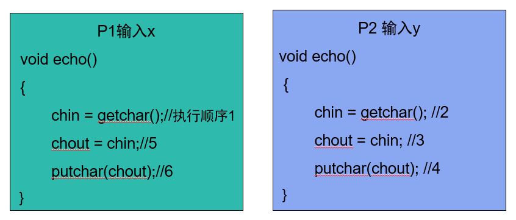
如上图所示: 在P1输入x后，CPU接受到中断，在中断处理后调度了P2，按图示顺序进行执行，则P1输入为x, 输出为y
P1和P2分别在单独的处理器上执行，同一行的事件并行，P1输入为x, 输出为y
因此OS需要提供并发控制的方法
互斥
互斥: 当一个进程在临界区访问共享资源时，其他进程不能进入该临界区访问共享资源的情形
互斥的要求(访问临界区的要求):
- 空闲让进: 如临界区空闲，则有进程申请就立即进入
- 忙则等待: 每次只允许一个进程处于临界区
- 有限等待: 保证进程在有限时间内能进入临界区
- 让权等待: 进程在临界区不能长时间阻塞等待某事件
实现进程互斥的方法
软件方法
软件方法是通过在进入区设置和检查一些标志来判断是否有进程在临界区，若已有进程在临界区，则在进入区通过循环检查进行等待，进程离开临界区后在退出区修改标志
思想:
- 临界区状态标志
- 预先表明进入临界区的态度(谦让/坚持进入)
软件方法的评价:
- 软件方法始终不能解决忙等现象，降低系统效率
- 采用软件方法实现进程互斥使用临界资源比较困难，特别是多个进程的互斥
- 算法设计需要非常小心，否则可能出现死锁、互斥失败等严重问题
Dekker算法
Dekker算法思路:
当p0希望进入自己的临界区时，它把自己的flag值设为true，然后继续 检查P1的flag，如果P1的flag为false,P0可以立即进入自己的临界区，否则 P0检查turn,如果发现turn=0，那么它知道自己该坚持进入，从而周期性的检查P1的flag，P1在某一点将注意到应把turn值赋为0，随后把其flag置为false,允许P0进入，在P0结束其临界区后，把自己的flag置为false。释放其临界区，并把turn值置为1，从而把坚持进入的权利转交给P1
1 | |
Peterson算法
Peterson算法思路:
考虑进程P0,一旦它把flag[0]置为true，P1不能进入其临界区，如果P1已经在临界区中，则flag[1]=true，P0被阻止进入临界区。
1 | |
硬件方法
硬件方法也主要有2种:
- 中断禁用
- 特殊机器指令
中断禁用
中断禁用可以解决单处理器情况下由中断引起的并发错误，但不能解决多处理器下的互斥问题
通过禁用中断，避免进程切换，实现互斥访问
但是会造成很多弊端:
- 无法响应外部请求
- 无法切换进程
1 | |
特殊机器指令
特殊机器指令由一条机器指令完成，因此不会被中断或多处理器并发指令影响
优点:
- 支持多处理器
- 简单、易证明
- 支持多临界区
缺点:
- 忙等
- 可能饥饿
- 可能死锁
这里只介绍其中2条特殊机器指令
compare_and_swap()指令: 比较一个内存单元的值和一个测试值，如果相等，则发生交换
实现的功能与下面这个函数相同
1 | |
exchange()指令: 原子性地交换寄存器和内存的值
实现的功能与下面这个函数相同
1 | |
信号量
信号量是实现进程互斥的最主要方法！
信号量: 两个或多个进程可以通过传递信号进行合作，迫使进程在某个位置暂时停止执行(阻塞)，直到它收到一个可以向前推进的信号(唤醒)，通过对信号量操作的原子化即可实现进程互斥
信号量可视为一个值为整数的变量，有且仅有具有三个操作:
- 初始化: 可以初始化为非负数
- semWait(Wait或P): 使信号量的值减少1，若值变为负数，则阻塞执行semWait(Wait或P)操作的进程
- semSignal(Signal或V): 使信号量的值增加1，若值小于等于零(说明有进程在等待增加)，则被semWait(Wait或P)阻塞的进程解除阻塞
其中信号量可以是二元信号量(只能为0和1)和计数信号量(一般信号量，整数)
计数信号量和二元信号量，都使用队列来组织等待信号量的进程:
- 强信号量: 进程以FIFO(First In First Out)方式从队列里移除
- 弱信号量: 未规定阻塞进程从队列里移除的顺序
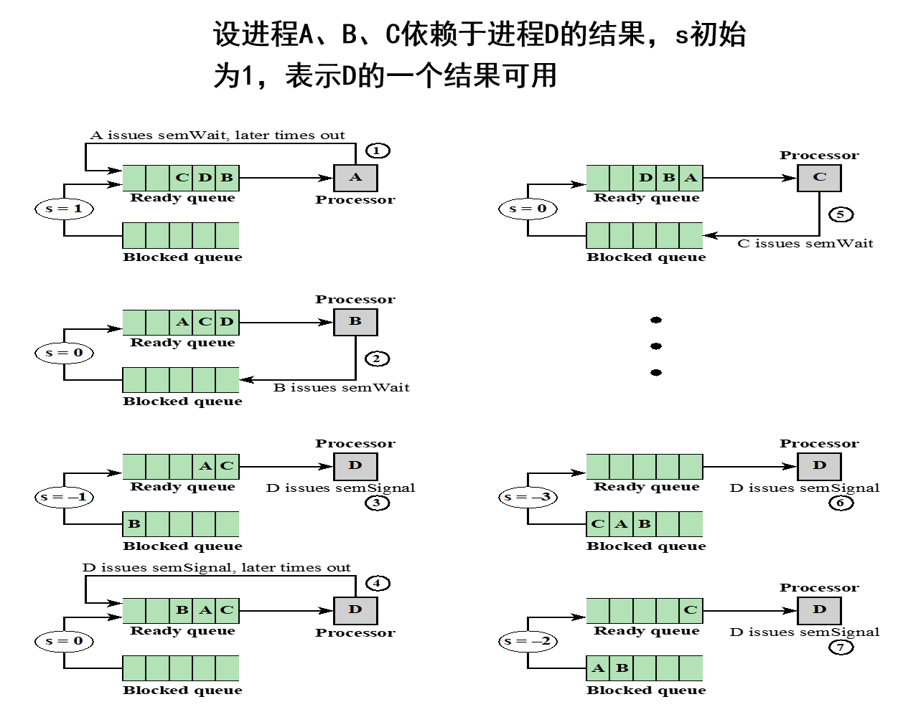
管程
信号量提供了方便的机制处理进程同步，但不正确的使用信号量仍会导致时序错误(死锁)，且难以检测:
- 先对信号量
V()再P()违反了互斥请求 - 对信号量始终调用
P()将导致死锁 - 一个进程遗漏了
P()或V()将导致死锁且可能破坏互斥
管程(monitor)类型提供了一组由程序员定义的、在管程内互斥的操作。管程内定义的子程序只能访问位于管程内的局部变量和形式参数，管程内的局部变量也只能被管程内部的局部子程序访问，管程结构确保了同时只能有一个进程在管程内活动
管程内部可定义condition类型的变量以提供同步机制，称其为条件变量。条件变量可执行操作wait()和signal()
条件变量存在于管程内部，对同一个条件变量调用操作的进程将和条件变量建立一定的联系，或者称之为绑定。对于管程内的条件变量 x，进程 P调用x.wait()将时自身挂起到条件变量x上；当另一个进程调用x.signal()时，在x上悬挂的进程会被重启，如果此时没有进程悬挂在x上，则x.signal()操作将被忽略
进程P调用x.signal()，且存在悬挂进程Q与条件变量x关联，根据管程的性质，若进程Q开始执行，则进程P必须等待
- 进程Q重启且进程P等待: 进程P将等待，直到进程Q离开管程或者等待另一个进程调用
x.signal() - 进程P唤醒进程Q且进程P继续执行：进程Q被唤醒，但仍然会等待，直到进程P离开管程，或者另一个触发条件
x.wait()
信号量实现管程:
进入管程的外部子程序结构F如下:
1 | |
对每个管程内的条件变量 x，引入信号量 x_sem 和整数变量 x_count 记录信号量 x 上挂起的进程数量，均初始化为 0。x.wait() 和 x.signal() 实现如下:
1 | |
消息传递
消息传递的2条通信原语:
- Send
- Receive
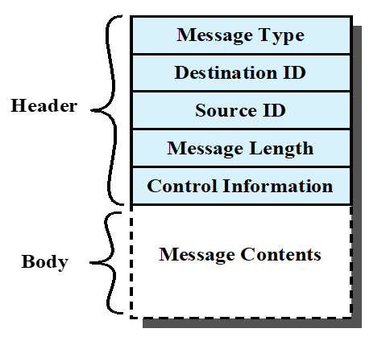
消息传递的3种同步方式:
- 阻塞发送，阻塞接收
- 不阻塞发送，阻塞接收
- 不阻塞发送，不阻塞接收
使用消息传递实现互斥
- 多个并发执行的发送进程和接收进程共享一个邮箱box，且box的初始状态为仅包含一条空消息(好比进入临界区的令牌)
- 采用不阻塞发送，阻塞接收方式传递消息
- 若邮箱中存在一条消息，则允许一个进程进入临界区
- 若邮箱为空，则表明有一个进程位于临界区，其它试图进入临界区的进程必须阻塞
- 只要保证邮箱中最多只有一条消息，就能保证只允许一个进程进入临界区，从而实现进程互斥使用临界资源
接收即为申请进入临界区，发送即退出临界区
1 | |
互斥问题
均通过信号量方法来进行解决
生产者与消费者问题
问题描述:
- 一个或多个生产者产生数据并放入缓冲
- 每次只能有一个消费者从缓冲中取出数据(互斥)
- 任何时刻只能由一个生产者或消费者访问缓冲(互斥)
同步问题:
- 缓冲区满时，生产者不会往缓冲区增加数据
- 缓冲区空时，消费者不能从缓冲区中取走数据
翻译为流程图形式:
一般需要表示可用资源的信号量、可放资源的信号量、保护放入资源和取出资源操作的信号量
应先申请资源信号量，再申请操作互斥信号量
例题:
- 桌子上有一只盘子，最多可以放入N(N>0)个水果
- 爸爸随机向盘中放入苹果或桔子，儿子只吃盘中的桔子，女儿只吃盘中的苹果
- 仅当盘子中有自己需要的水果时，儿子或女儿才可以从盘子中取出相应的水果
- 每次只能放入或取出一个水果，且不允许多人同时使用盘子
1 | |
- 桌子上有一只盘子，爸爸负责向盘中放苹果，妈妈负责向盘中放桔子
- 儿子只吃盘中的桔子，女儿只吃盘中的苹果
- 只有盘子为空时，爸爸或妈妈才可以向盘子中放入一个水果
- 仅当盘子中有自己需要的水果时，儿子或女儿才可以从盘子中取出相应的水果
1 | |
- 桌子上有一只盘子，最多可以放入2个水果
- 爸爸负责向盘中放苹果，妈妈负责向盘中放桔子，女儿负责取出并消费水果，放入者和取出者不允许同时使用盘子
- 当且仅当盘子中同时存在苹果和桔子时，女儿才从盘子中取出并消费水果
1 | |
- 女儿负责画画，爸爸、妈妈负责欣赏
- 女儿在白板上画完一幅画后，请爸爸、妈妈均欣赏过一遍后，再创作新画
1 | |
读者与写者问题
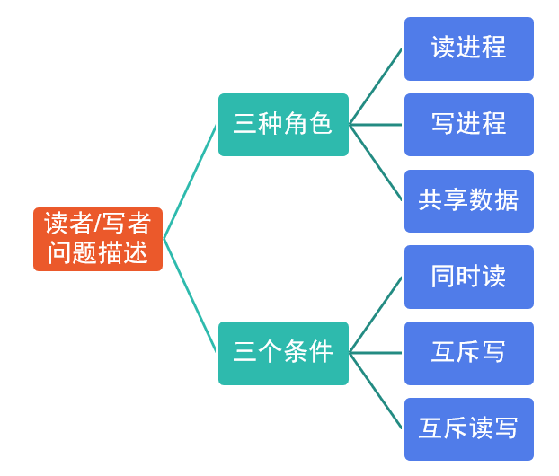
读者与写者问题有3种解决策略:
- 读者优先
- 写者优先
- 公平读写
读者优先
- 一旦有读者正在读数据，则允许随后的读者进入读数据
- 只有当全部读者退出，才允许写者进入写数据(可能导致写者饥饿)
1 | |
例题:
- 有一座东西方向的独木桥，同一方向的行人可连续过桥
- 桥上没有行人过桥时，任何一端的行人均可上桥
- 独木桥的最大承重为4人
1 | |
公平读写
写过程中，若其它读者、写者到来，则按到达顺序处理
公平读写可以由读者优先进行简单改进而得到
因为file这个信号量对已经有读者在访问文件时无效，即便前面有写者在排队也会被跳过，因此可以由写者加一个防插队门锁lock，即如果读者前面有写者则无法直接插队，而如果前面的是读者则lock不应该阻止读者一起读
1 | |
写者优先
当至少有一个写者声明想写数据时，则不再允许新的读者进入读数据
写者优先也是与读者优先类似，写者可以插队，因此读者必须排队，而在读写公平加了lock锁后读者就必须排队了，同样写者也要排队，现在写者优先可以通过对写者的防插队锁lock进行选择性加锁来实现，同时如果读者在前面有很长的队列，第一个写者需要慢慢排队过去才能让后面的写者插队，因此需要限制读者队伍长度
1 | |
理发师问题
理发店有1位理发师、1把理发椅和5把供等候理发的顾客坐的椅子。如果没有顾客，则理发师睡觉。当一个顾客到来时，他必须叫醒理发师，如果理发师正在理发时又有顾客到来，则如果有空椅子可坐，他就坐下来等。如果没有空椅子，他就离开
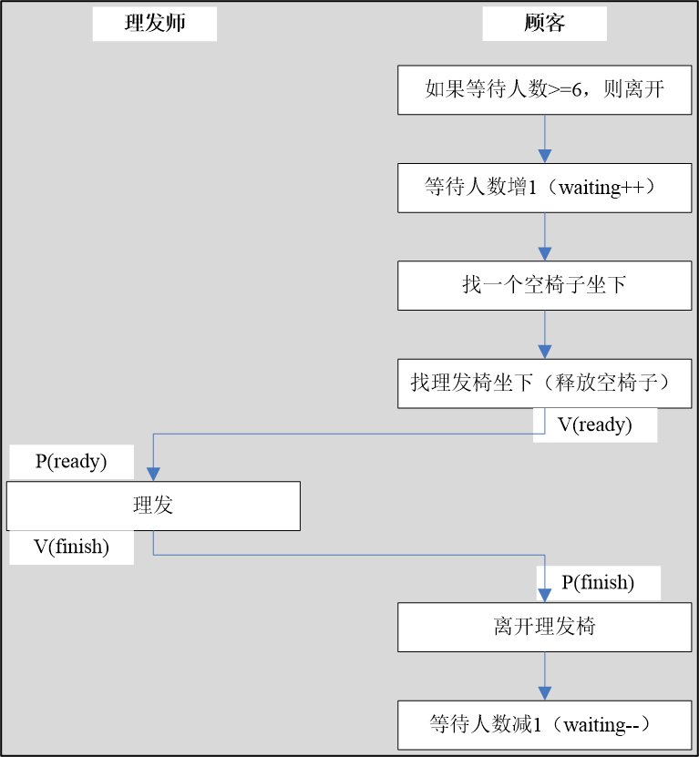
1 | |
哲学家就餐问题
一张圆桌上坐着5名哲学家，每两个哲学家之间的桌上摆一根筷子，桌子的中间是一碗米饭。哲学家们倾注毕生精力用于思考和进餐，哲学家在思考时，并不影响他人。只有当哲学家饥饿的时候，才试图拿起左、右两根筷子(一根一根地拿起)。如果筷子已在他人手上，则需等待。饥饿的哲学家只有同时拿到了两根筷子才可以开始进餐，当进餐完毕后，放下筷子继续思考。
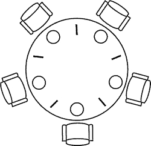
资源分级一: 为餐叉编号，就餐前，先取用编号较低的餐叉，再取用编号较高的餐叉，就餐毕，先放下编号较高的餐叉，再放下编号较低的餐叉
1 | |
资源分级二: 为哲学家编号，奇数号的哲学家必须首先拿左边的餐叉，偶数号的哲学家必须首先拿右边的餐叉
1 | |
服务生方法: 引入一个餐厅服务生，哲学家必须经过他的允许才能拿起餐叉，并且最多允许4个哲学家同时进食
1 | |
死锁
定义: 一组相互竞争系统资源或进行通信的进程间的永久阻塞
当一组进程中的每个进程都在等待某事件，而只有同组进程中阻塞的其他进程能够促发该事件时，死锁发生
死锁原理
资源分为:
- 可重用资源: 一次仅供一个进程安全使用且不因使用而耗尽的资源，如CPU、内存外存、设备等
- 可消耗资源: 可消耗资源是指**可被创建(生产)和销毁(消耗)**的资源
死锁发生的原因正如定义所言: 竞争系统资源或进行通信
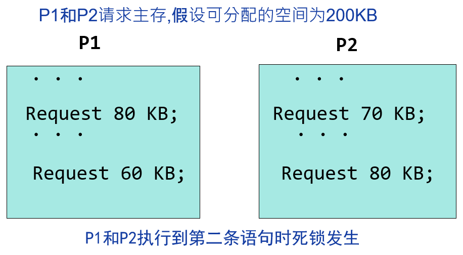
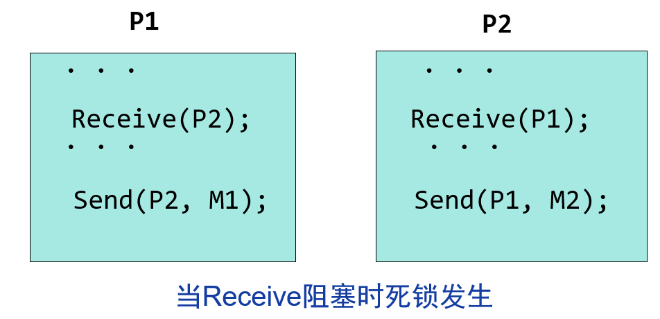
死锁发生的条件:
- 必要条件
- 互斥: 一次只有一个进程可以使用一个资源
- 占有且等待: 当进程等待其他资源时，继续占有已经分配的资源
- 不可抢占: 不能强行抢占进程已经占有的资源
- 充分条件: 循环等待: 存在一个闭合的进程链，每个进程至少占有此链中下一个进程所需的一个资源
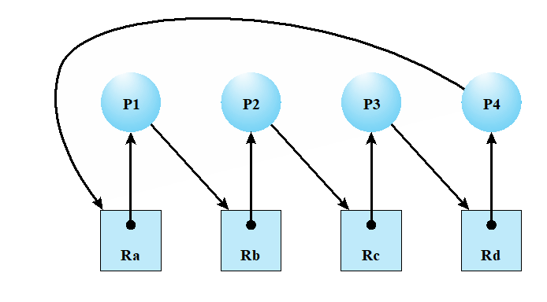
死锁预防
死锁预防的方法就是防止死锁产生条件的发生，防止3个必要条件中任意一条发生，也防止循环等待发生
互斥
如果需要对资源互斥访问，那么操作系统必须支持，否则很多OS功能无法实现，因此无法预防互斥
占有且等待
要求进程一次性请求所有资源，并阻塞这个进程直到所有资源请求能够满足但进程所需所有资源可能不确定，因此进程可能会阻塞很长时间，并且某些已分配资源可能很久不使用
不可抢占
一个占有某些资源的进程进一步申请资源时若被拒绝，则释放最初占有的资源或操作系统要求另一个进程释放资源
循环等待
定义一个请求资源的顺序，系统把所有资源按类型进行线性排队，如, , ，所有进程对资源的请求必须严格按资源序号递增的顺序提出
死锁避免
死锁避免允许3个必要条件发生，但在系统运行过程中，检查进程的资源申请，若分配后系统可能发生死锁则不予分配，否则予以分配
判断资源分配是否安全的算法称为银行家算法:
当用户申请一组资源时，系统必须做出判断: 如果把这些资源分出去，系统是否还处于安全状态。若是，就可以分配这些资源，否则，暂时不分配，阻塞进程
注意: 安全状态是非死锁状态，而不安全状态并不一定是死锁状态，即系统处于安全状态一定可以避免死锁，而系统处于不安全状态则仅仅可能进入死锁状态

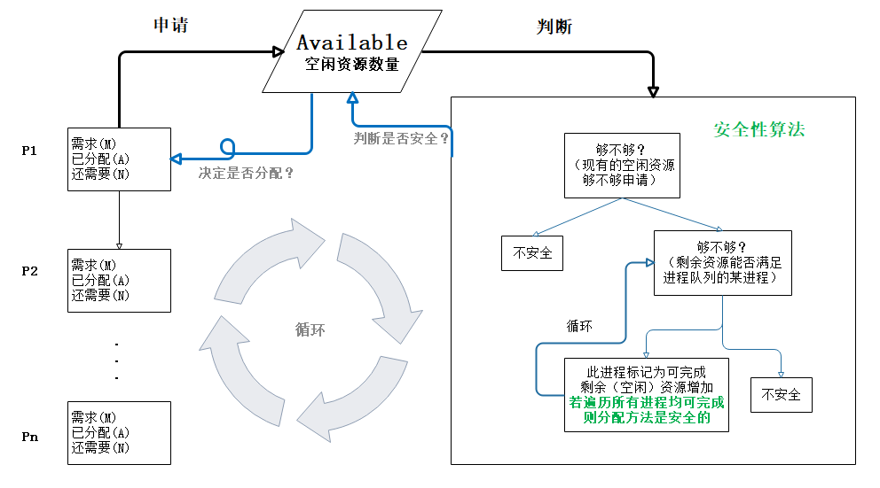
数据结构说明:
- Available向量: 系统中可利用的资源数目
- Max矩阵: 每个进程对每种资源的最大需求
- Allocation矩阵: 每个进程已分配的各类资源的数目
- Need矩阵: 每个进程还需要的各类资源数
- Need[i, j] = Max[i, j] - allocation[i, j]
例题:
(1): 安全，因为存在安全序列: P2 -> P1 -> P3 -> P4
(2): 分配资源后如图，仍然安全，因为存在安全序列: P2 -> P1 -> P3 -> P4
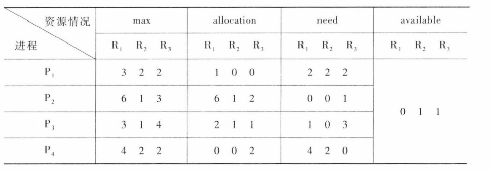
(3): 不能，因为系统剩余资源不足P1要求的资源
(4): 分配资源后如图，不安全，因为剩余资源无法使任何进程结束
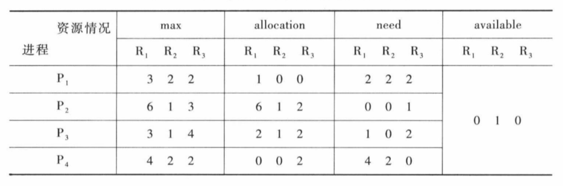
死锁避免的使用限制
- 必须事先声明每个进程请求的最大资源
- 进程必须是独立的，它们执行顺序没有同步的要求
- 分配资源的数量必须是固定的
- 占有资源时，进程不能退出
死锁检测与解除
死锁检测与解除允许死锁的发生，只要有可能，就给进程分配其所请求的资源，但会定时进行死锁检测
死锁检测算法(与银行家算法安全性检查中相同)步骤:
- 标记Allocation矩阵中一行全为零的进程
- 初始化一个临时向量W，令W等于Available向量
- 查找下标i，进程i当前未标记且满足Q(表示进程i请求j类资源的数量）的第i行小于等于W, 即对所有的k,, 若找不到这样的行，终止算法
- 若找到这样的行，标记进程i，并把Allcation矩阵中的相应行加到W中，即对所有k, 令，返回步骤3
解除: 检测到死锁后，按照某种可能的策略来解除
策略:
- 撤消进程: 连续撤消死锁进程直到不再存在死锁
- 回退: 把进程回退到前面定义的某些检查点，并重新启动所有进程
- 抢占: 连续抢占资源直到不再存在死锁
选择原则: 目前为止消耗处理器时间少，或输出少，或分配资源少，或剩余时间长，或优先级最低的进程
本博客所有文章除特别声明外，均采用 CC BY-SA 4.0 协议 ，转载请注明出处！